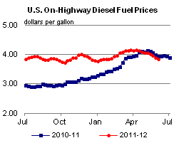

Released: June 6, 2012
Next Release: June 13, 2012
A Turning Point for U.S. Oil Inventories?
This week's petroleum supply data from the U.S. Energy Information Administration, which include robust builds in gasoline and distillate inventories and a slight decrease in crude oil inventories, mark a subsequent break from ten consecutive weeks of crude builds and 15 weeks of gasoline draws. Barring any unforeseen disruption in crude and product markets, this trend reversal, if confirmed in the next few weeks, may signal the start of a long-expected rebuilding of U.S. product inventories, as well as continued downward pressure on retail product prices this summer.
Directionally, the U.S. product markets tend to follow a seasonal pattern. U.S. refiners typically plan most of their maintenance activities during the first and fourth quarters. In the first quarter, maintenance is usually heaviest in February and early March. Reduced refinery inputs during that time lead to rising crude stocks but dwindling product inventories through the first quarter and into the second quarter. Seasonal swings in demand compound the effect of those shifts in the production cycle. Distillate inventories usually hit their trough in mid-April, following the heating season, while those of gasoline usually bottom out in May as winter-grade inventories are shed in favor of lower-volatility summer grades. May also typically marks an inflection point when refinery production returns in earnest. May is also when gasoline crack spreads typically reach their annual peak.
This year's trend in crude oil and product inventories had been broadly consistent with seasonal patterns, but both the crude build and product draws were steeper and more prolonged than could be fully attributed to planned maintenance: crude stocks posted builds of 22.3 million barrels (12.8 million barrels more than the five-year average) between early April and late May (Figure 1), even as gasoline stocks drew by 21.7 million barrels (10.3 million barrels more than the five-year average) and distillate stocks by 18.1 million barrels (18.1 million barrels more than the five-year average).

Increasing domestic crude oil production and below-average refinery runs caused crude inventories to grow strongly this spring. Through the first quarter of 2012, refineries ran at levels comparable to, and at times above, their five-year average. But a string of unplanned outages on the West Coast (most notably at BP's Cherry Point refinery in Washington state) kept U.S. gross refinery inputs flat through April, a time when refineries normally ramp up production ahead of summer. Strong crude production, which in the four weeks leading up to June 1 averaged 13 percent higher than a year ago in the lower 48 states, coupled with flat refinery inputs in April, set off the current run-up in crude oil inventories, which reached 384.7 million barrels on May 25, their highest level since July 1990. Much of the stock overhang found its way to the Cushing, Oklahoma storage and trading hub. The increase in Cushing inventories accounted for almost 30 percent (6.6 million barrels) of the total U.S. crude oil inventory build in April and May, a testament to the growing midcontinent production. The Gulf Coast accounted for another 44 percent (9.8 million barrels), aided by growing production from the Eagle Ford tight oil formation and the Permian Basin.
In contrast, the combination of flat refinery inputs and a steep year-on-year decline in gasoline imports led to a sharp draw in gasoline inventories. From a surplus of 7.4 million barrels (3.4 percent) compared to their five-year average on January 13, gasoline stocks swung to a deficit of 7.6 million (3.7 percent) by May 25. Especially-steep drops on the West Coast led the decline. Distillate inventories, which had closely tracked their five-year average through the first quarter, also began to drift lower in April as refinery inputs languished. Distillate inventories fell 18.1 million barrels from the end of the first quarter to May 25, failing to commence their typical gradual seasonal build.
A late-spring uptick in refinery inputs had been slow, until last week, to stem the persistent inventory trends. With the exception of the West Coast, prices did not respond strongly to persistent product inventory draws, owing to the general weakness in U.S. petroleum demand and renewed concerns regarding global economic growth. Based on monthly data, total U.S. consumption of petroleum products was down 3.9 percent (750,000 barrels per day [bbl/d]) year-over-year in the first quarter. While weekly data show some signs of firming U.S. demand, crack spreads on the Gulf Coast and trans-Atlantic product price differentials have not strengthened to the degree one might expect, especially given the persistent inventory draws.
The tepid flow of product imports into the U.S. market further compounded product draws. Often when domestic refinery inputs slump and inventories draw, wholesale gasoline prices in the United States rise compared to those in Europe, sending a market signal to ship gasoline across the Atlantic. But these price differentials have not materialized in the current market cycle. In April and May, wholesale gasoline in New York Harbor prices averaged a one cent discount to the Amsterdam-Rotterdam-Antwerp product hub, providing no incentive to move significant volumes of European products to the United States. In the four weeks leading up to June 1, the United States imported 721,000 bbl/d of gasoline, 39 percent less than the almost 1.2 million bbl/d imported over the same period a year earlier.
In May, typically the month with the highest crack spreads in the eastern half of the country, Gulf Coast 3-2-1 crack spreads fell one cent per gallon below their five-year average level for the month, and in New York Harbor that crack spread moved to seven cents per gallon below its typical 34 cents per gallon. The one exception was the West Coast, where crack spreads increased from April to May (the West Coast usually sees an April peak), as resolution to the outages in the regions was slow to develop.
Despite seemingly unattractive crack spreads, refinery runs did post a steep rebound in the latest week, however, as West Coast and East Coast refining operations continued to recover from earlier unplanned outages and new capacity came on stream in the Gulf Coast. It has also helped that U.S. refineries in the Mid-Continent enjoy relatively low priced crude oil feedstock and exceptionally low natural gas prices, reducing their operating costs (which are largely driven by energy consumed in the refining process), thus padding their profit margins. With refinery inputs rising seasonally, product inventories, barring any further disruption in supply, seem likely to make up for lost time and may start rebuilding at a brisk pace, as sluggish demand growth compounds the effect of recovering production. Current indications point to a comfortable supply-demand balance in product markets through the summer, and a possibly challenging environment for margins.
Gasoline and Diesel Prices Continue to Fall
The U.S. average retail price of regular gasoline decreased 5.7 cents this week to $3.61 per gallon, 17 cents per gallon lower than last year at this time. Prices have decreased in all regions of the Nation for the third consecutive week. The Midwest price saw the largest decrease, about seven cents, to $3.52 per gallon, while the East Coast price declined almost six cents to $3.51 per gallon. The Gulf Coast price is now $3.37 per gallon, about five cents lower than last week, and the West Coast price was down about four cents to $4.19 per gallon. The Rocky Mountain region saw the smallest decrease, falling just over a penny to $3.73 per gallon.
The national average diesel fuel price decreased just over 5 cents to $3.85 per gallon, 9 cents per gallon lower than last year at this time. The West Coast saw the largest decrease, just over six cents, but retained the most expensive regional average at $4.10 per gallon. The East Coast average dropped about five cents to $3.89 per gallon, while the Midwest price is now $3.75 per gallon, about five cents lower than last week. Diesel on the Gulf Coast fell more than four cents to $3.76 per gallon, and the Rocky Mountain region saw the smallest decrease, almost three cents, to $3.92 per gallon.
Propane Inventories Continue to Build
The robust build in primary supplies of propane seen since mid-March continued last week with inventories increasing 2.3 million barrels, pushing stocks higher to an estimated 57.9 million barrels as of June 1, 2012. Total stocks are 23.3 million barrels (67.4 percent) above the year-ago level and both the U.S. total and the regional levels are above their respective 5-year ranges. Most of the weekly build was concentrated in the Midwest where inventories gained 1.3 million barrels, while the Gulf Coast reported the second largest weekly gain that measured 0.7 million barrels. The Rocky Mountain/West Coast region grew by 0.3 million barrels and the East Coast stocks were up slightly. Propylene non-fuel-use inventories represented 6.1 percent of total propane inventories.
Text from the previous editions of This Week In Petroleum is accessible through a link at the top right-hand corner of this page.
|  | |||||||
| Retail Data | Change From Last | Retail Data | Change From Last | ||||
| 06/04/12 | Week | Year | 06/04/12 | Week | Year | ||
| Gasoline | 3.612 | Diesel Fuel | 3.846 | ||||
|
|||||||||||||||||||||||||||
| *Note: Crude Oil Price in Dollars per Barrel. | |||||||||||||||||||||||||||
| Stocks Data | Change From Last | Stocks Data | Change From Last | ||||
| 06/01/12 | Week | Year | 06/01/12 | Week | Year | ||
| Crude Oil | 384.6 | Distillate | 120.0 | ||||
| Gasoline | 203.5 | Propane | 57.915 | ||||